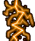

Bienvenido
Bienvenido a mi apartado en el que Aquello que no debe de ver la luz — un espacio donde exploraremos los enigmas del mundo…

Esta es una recopilación de algunos relatos existentes en mi antiguo sitio por allá en el año 2000 app… En aquél entonces recibía algunos de estos relatos y los compartía… Espero que les guste…
La migración ha ido lenta… Hay información algo antigua y también los tiempos actuales no son los mismos que tenía en aquellos entonces… Así que mientras… A conformarse…
“El misterio es la fuente de toda verdadera ciencia.” — Einstein
La curiosidad no mató al gato, lo hizo más sabio.
Eres libre de visitar y revisar…